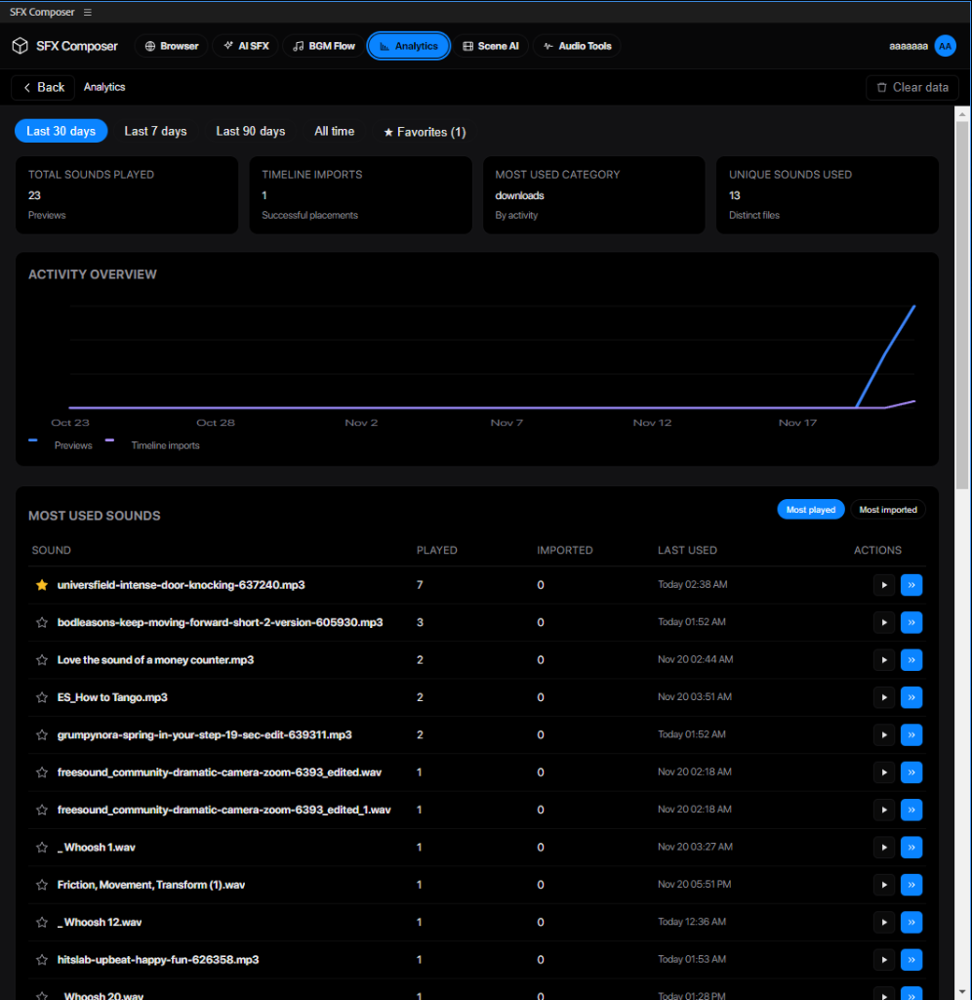

Meet the New SFX Composer
A smarter sound design workspace built for modern video editors. Discover, organize, process and place sound effects with powerful tools and intelligent AI assistance.
Explore the New SFX Composer
A comprehensive product demonstration showcasing the real SFX Composer application interface. Scroll through all 8 core workflows, inspect every feature in high resolution, and click any screenshot to view it fullscreen.
Meet SFX Composer
A professional sound effects workflow designed to make audio editing faster, smarter and more efficient. Docked directly inside Adobe Premiere Pro and After Effects, SFX Composer connects your entire audio workflow with instant waveform browsing, multi-track timeline placement, and intelligent creative tools.

Explore Your Sound Library
Discover, organize and preview thousands of sound effects with an advanced sound browsing experience. SFX Composer combines a lightning-fast local library browser with an in-panel web companion — offering instant search across 17,111+ indexed sounds, draggable waveform In/Out boundary trimming, royalty-free online search, and multi-track sequence placement.


Your AI-Powered Sound Assistant
Find the perfect sound effects using an intelligent assistant that understands your creative requirements and searches your local sound library. Powered by local Ollama (Llama 3.2) or Cloud LLMs, the assistant analyzes your natural-language prompts, identifies matching sound characteristics, and presents ranked results with instant preview and timeline placement actions.

Intelligent Background Music Control
Create professional background music transitions with precise volume control, fade curves and automatic beat synchronization. BGM Flow provides 14 curated transition styles spanning Music Start, Music End, and Music Change modes, with adjustable fade duration, target volume, and equal-power S-curve envelopes.

Understand Your Audio Workflow
Track your sound usage, timeline imports, favorites and activity through a dedicated analytics dashboard. SFX Composer operates 100% locally on your machine, collecting zero telemetry while giving you rich insights into which sound effects, categories, and styles you rely on most in your editing sessions.

Intelligent AI Timeline Control
Analyze your active composition and help build sound design directly around your timeline. Scene AI integrates directly with Adobe Premiere Pro and After Effects via CEP, checking host readiness and local Ollama inference to inspect cuts, evaluate scene energy, and execute verified timeline commands automatically.

Essential Sound Studio
Fine-tune your audio with professional processing controls and waveform-based editing. The Essential Sound Studio gives editors a dedicated 3-column workstation: quick library browsing on the left, high-precision central waveform viewer with Peak and RMS meters in the middle, and professional DSP controls on the right.

Customize Your Workspace
Personalize your SFX Composer experience with flexible settings, library management, appearance controls and playback preferences. Configure your user profile, choose from 6 accent color themes, link multiple local sound library folders, switch between Studio Dark, Ultra Dark and Light appearances, and review diagnostics activity logs.


SFX Composer
v2.2.0


Engineered For Modern High-Speed NLE Workflows
Everything video editors need to design, sculpt, transition, and lay down sound tracks in Adobe Premiere Pro and After Effects.
17,111+ Local SFX Library & 5ms Search
Connect your local hard drive or bundled library. Ultra-fast in-memory indexing searches tens of thousands of sound effects in under 5 milliseconds with category hierarchy and waveform previews.
BGM Flow & Beat Detection
14 background music transition styles across Music Start, End, and Change. Features transient beat detection, tempo-snapped markers, and Auto EQ curves to carve speech pockets automatically.
Essential Sound Studio & Audio Tools
3-panel audio workstation. Real-time multi-band biquad EQ, bass shaping, -1.00 dBFS normalization, smoothstep fade curves, and non-destructive 24-bit WAV exports.
AI SFX Assistant (Local Ollama & Cloud)
Describe the visual scene or feeling you need. Local AI analyzes your prompt and recommends optimal multi-layered sound stacks with one-click preview and timeline placement cards.
Built-in Browser Companion
Search and download external royalty-free sound effects directly inside the extension panel. Files are downloaded, converted, and placed onto the sequence playhead without switching apps.
Scene AI & AI Timeline Control
Analyze video cuts and motion markers across your sequence. Run natural-language timeline commands and place synchronized audio whooshes and hits automatically.
Premiere Pro & After Effects Dual-Host Sync
One single extension bundle serves both Premiere Pro and After Effects natively. Automatically adapts to active sequence tracks (A1–A4, BGM) and After Effects audio comp layers.
100% Local Privacy-First Analytics
Track your audition volume, timeline placements, and workflow time saved with zero cloud telemetry. All database records remain 100% on your local machine.
Master SFX Composer In Minutes
Step-by-step guides for installing, configuring, and mastering audio design inside Premiere Pro and After Effects.
Upgrade Your Video Editing Audio Today
Get lifetime access to the complete SFX Composer desktop extension, Essential Sound Studio, Audio Tools, and the starter sound pack.
SFX COMPOSER + STARTER SFX PACK
Complete Adobe CEP extension for Premiere Pro & After Effects
- ✔ Complete SFX Composer CEP plugin
- ✔ Included starter SFX pack (Whooshes, Hits, Risers)
- ✔ Essential Sound Studio (Dialogue, Music, SFX)
- ✔ Audio Tools waveform editor & WAV export
- ✔ Local 17K+ library workflow & 5ms search
- ✔ Product updates according to selected license
Frequently Asked Questions
Install SFX Composer.bat script, restart Premiere Pro or After Effects, and open it from Window > Extensions > SFX Composer.